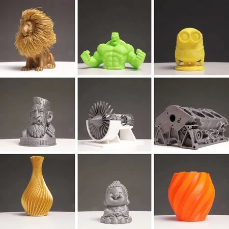
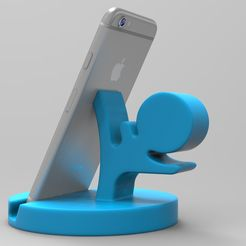
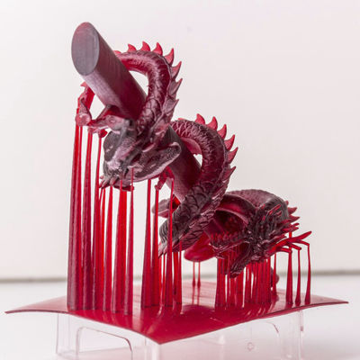

Modelado 3D: El proceso comienza con la creación de un diseño tridimensional en un software de modelado 3D. Este diseño digital es la representación del objeto que se desea imprimir.

Preparación del archivo: Una vez que se ha completado el diseño, se prepara el archivo para la impresión. Esto implica dividir el modelo en capas más delgadas para que la impresora 3D pueda construir el objeto capa por capa.

Selección del material: Se elige el material de impresión adecuado para el objeto, que puede ser plástico, resina, metal, cerámica, entre otros. Cada material tiene sus propias propiedades y aplicaciones.

Impresión: La impresora 3D lee el archivo preparado y comienza a imprimir el objeto capa por capa. Utiliza el material seleccionado y lo deposita con precisión según las especificaciones del diseño.

Solidificación o unión de capas: Dependiendo del tipo de impresión 3D, las capas se solidifican (en el caso de plásticos o resinas) o se unen (en el caso de metales). Esto puede hacerse con calor, luz UV, químicos u otros métodos dependiendo del material.

Acabado: Una vez completada la impresión, el objeto puede requerir algún tipo de acabado post-impresión, como lijado, pulido, pintura, o procesos adicionales para asegurar la calidad y precisión del objeto.